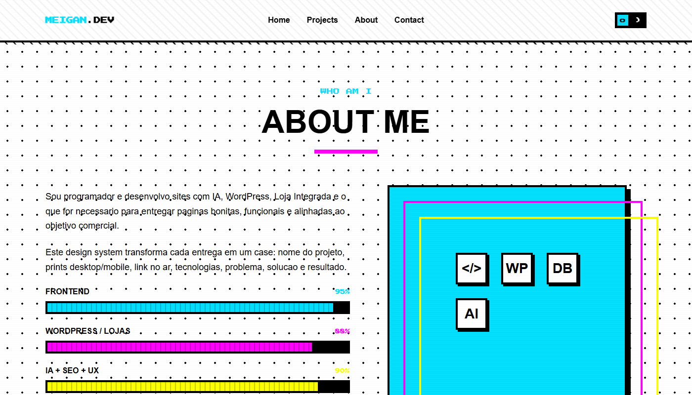
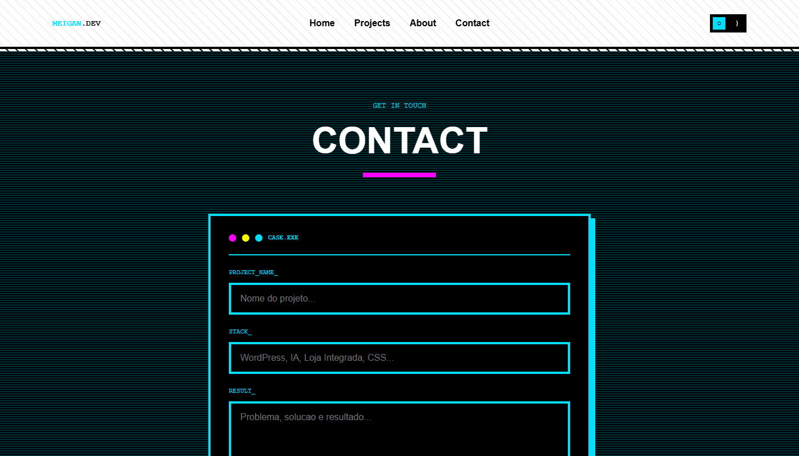

Identidade
01
O nome ganha o protagonismo da primeira dobra.
Tipografia grande, selo pixelado e cor pontual tornam a identidade imediatamente reconhecível na abertura.
Um design system de portfólio inspirado na linguagem dos arcades: preto como estrutura, ciano, magenta e amarelo como acentos, tipografia pixel e componentes com contorno e sombra marcados.
O estudo traduz referências de arcade em uma interface reutilizável: grade pontilhada, diagonais, scanlines discretas, botões de borda grossa e cards com sombra dura. A identidade aparece na home, no grid de projetos, na área sobre, na biblioteca de tokens e até em um formulário conceitual com aparência de terminal.
A demonstração percorre identidade, vitrine, apresentação pessoal, tokens e contato; os mesmos códigos visuais conectam as cinco etapas.
Tipografia grande, selo pixelado e cor pontual tornam a identidade imediatamente reconhecível na abertura.

A grade usa molduras escuras, cores alternadas e títulos compactos para criar ritmo entre os projetos de exemplo.

O fundo pontilhado cria textura sem esconder a leitura; barras coloridas e molduras deslocadas traduzem competências no mesmo idioma visual dos cards.

O sistema reúne padrões pontilhados e diagonais, sombra dura e cores de arcade para manter a identidade coesa.

A seção escura retoma as scanlines e usa rótulos monoespaçados, bordas ciano e campos amplos. É uma exploração visual do formulário, não um canal de envio conectado.
Os tokens da demo não servem só para decorar: eles definem hierarquia, ritmo e contraste em toda a interface.
Preto e branco sustentam a leitura. Ciano, magenta e amarelo destacam ações, numeração e estados; grid e diagonais criam textura.
#03dffc#ff03fc#fcff03#00000030px45°ciano → magenta4px + sombraSpace Grotesk conduz os títulos, Inter cuida dos parágrafos e Press Start 2P sinaliza etiquetas e microdetalhes de arcade.
Press Start 2P · etiqueta
PROJECTS / 01
Inter · texto explicativo com leitura direta, mesmo quando o entorno usa contraste e grafismos intensos.
Este exemplo visual reúne borda preta espessa, sombra deslocada, área gráfica vibrante, etiqueta pixel e ação de alto contraste.
Numeração, tags e contorno duro dão ritmo à grade. O corpo mantém objetivo, tecnologia e contribuição legíveis.
Criar uma identidade de portfólio memorável sem transformar cada card em uma composição diferente ou sacrificar a leitura.
Fixar uma gramática de bordas, sombras, tipografia e padrões; variar apenas os acentos entre os cards e seções.
Uma demo navegável com abertura, grade de projetos, área sobre, tokens e contato em linguagem de terminal.
O estudo híbrido usa este repertório gráfico junto da estrutura mais calma da direção editorial.